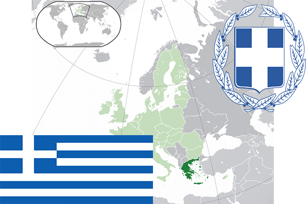

To`liq nomi: Gretsiya Respublikasi
Region: Janubiy Yevropa
Qonunchilik shakli: Respublika
Mustaqillik kuni: 25-mart 1821 – yil Birinchi Gretsiya Respublikasi (Usmonli Imperiyasidan)
Poytaxt: Afina
Maydoni: 131 957 km² (dunyoda 95 -o`rinda )
Chegaradosh davlatlari: Albaniya, Makedoniya, Bolgariya, Turkiya
Aholisi: 10 955 000 (dunyoda 75 - o`rinda, 2013 -yil roʻyxat)
Aholi zichligi: 85,3 /km²
Aholining o`rtacha yoshi: 79,5 yil ( 82,1 ayollar, 76,9 erkaklar)
Rasmiy tili: grek tili
Pul birligi: yevro
Telefon prefiksi: +30
Internet domen: .gr
Xalqaro tashkilotlarga a`zoligi: BMT (1945 – yildan), Yevropa Ittifoqi (1981-yildan), Shimoliy Atlantika Shartnomasi (1952-yildan)
Dengiz va okeanlarga chiqishi: Egey va O`rtayer dengizi
YIM: Butun: $ 294 mlrd Jon boshiga $ 26 773 (2015 - yil roʻyxati)
Yirik shaharlari: Afina, Saloniki, Patri, Larisa